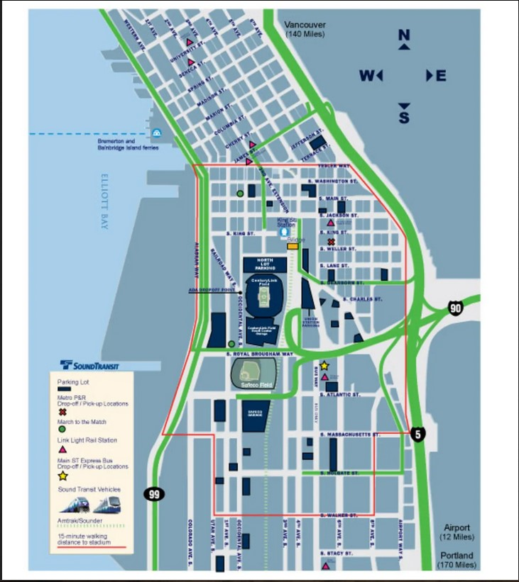

The Transportation Guide is made to make your route to and from Lumen Field on matchday seamless. Whether your driving and parking or taking public transit, we want to make it as easy as possible for you.

Downtown Seattle
Coming from downtown Seattle? King County Metro Bus service can take you within three blocks of Lumen Field.
get more details
North
Bellingham: Consider the Amtrack Cascade SErvices. They have a large station next to Lumen Field. Be sure to book your tickets early.
Edmonds: Take the train (on weekends only) that departs from 210 Railroad Ave.
Everett: Consider the train (3201 Smith Ave.) or the ST Express Bus from the Everett Station or the Eastmont Park and Ride. Get off at 5th Ave. and Jackson Street, then board at Busway and Royal Brougham Way.
Northgate: Located south of Northgate Mall, you can park and ride the buses that take you directly to 1st Ave. S and Royal Brougham Way.
South
Kent: Consider taking the Sounder Train from the Kent Station.
Tacoma: Take the Sounder Train out of the Tacoma Dome Station or hop on the ST Express Bus. You'll get off at 4th Ave. and Jackson Street, then board at Busway and Royal Bougham Way.
Portland: Use Amtrak Cascades Services. They have a large station next to Lumen Field. Be sure to book your tickets early.
Puyallup: Hop on the Sounder Train at the Puyallup Station for an easy trip.
East
Bellevue: The bus Route 550 from South Bellevue Park and Ride is a simple ride to the 5th Ave. and Jackson stop.
Bothell: Take the ST Express Bus from UW Bothell (Bus route 522) to the 2nd Ave Ext and Jackson Street for a direct trip.
Redmond: Consider taking the ST Express Bus (route 545) from Overlake and Evergreen Point. Hop off at the 5th Ave. and Jackson stop.
Issaquah: The ST Express Bus (route 554) from Issaquah Park and Ride takes you to the 5th Ave. and Jackson stop, only steps to Lumen Field.
West
Bainbridge: The Seattle-Bainbridge ferry drops off at the Colman Dock (Pier 52) - only a 15-minute walk to Lumen Field.
Bremerton: The Seattle-Bremerton ferry drops off at the Colman Dock (Pier 52) - only a 15-minute walk to Lumen Field.